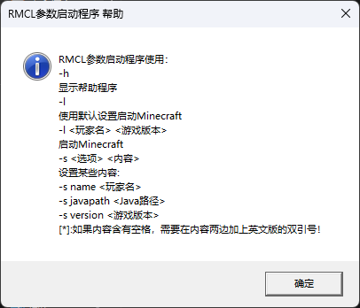

RMCL - 调用
该篇内容将描述如何通过CMD命令调用RMCL
首先，我们先了解一个命令：-h
命令提示符程序
RMCL.exe -h
在使用这个命令后，RMCL会有一个弹窗，上面有命令用法

帮助窗口
有了这个命令后，我们可以知道一些RMCL的参数命令。
该篇内容将描述如何通过CMD命令调用RMCL
首先，我们先了解一个命令：-h
RMCL.exe -h
在使用这个命令后，RMCL会有一个弹窗，上面有命令用法
帮助窗口
有了这个命令后，我们可以知道一些RMCL的参数命令。